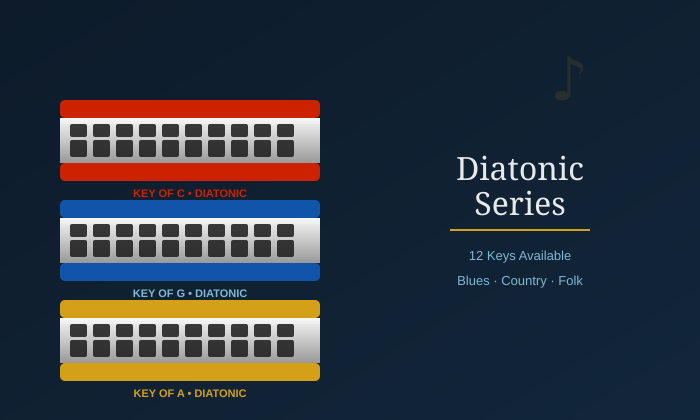
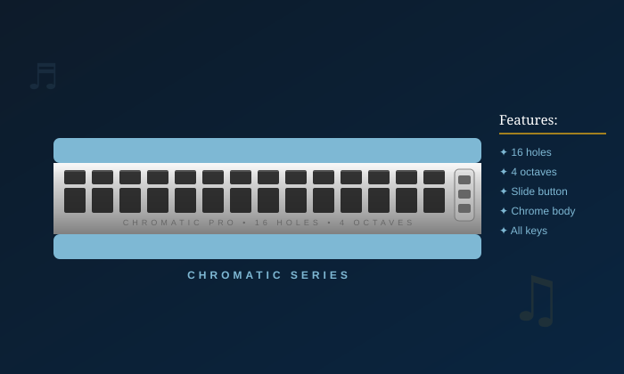
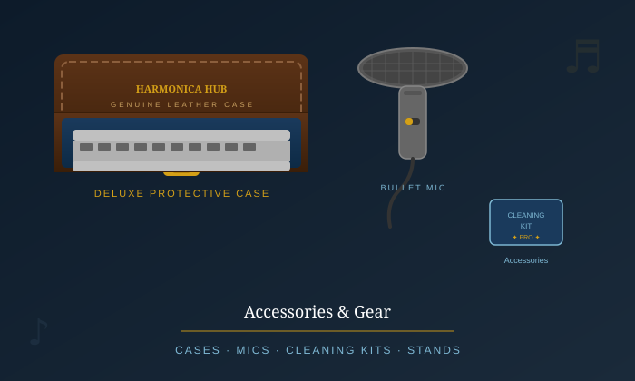

Nuestras armónicas diatónicas son ideales para blues, country, folk y rock. Disponibles en las 12 tonalidades, ofrecemos modelos para principiantes y opciones profesionales para músicos con experiencia. Cada armónica es revisada y afinada antes de su entrega para garantizar un sonido claro y de calidad.

Las armónicas cromáticas permiten tocar una escala musical más amplia gracias a su mecanismo deslizante. Son muy utilizadas en jazz, música clásica y pop. Contamos con distintos modelos y tamaños para quienes buscan un instrumento elegante, cómodo y con sonido profesional.

También ofrecemos accesorios para complementar tu experiencia con la armónica: estuches, soportes, kits de limpieza, micrófonos y repuestos. Estos productos ayudan a proteger el instrumento, facilitar su mantenimiento y mejorar su uso en prácticas, presentaciones y grabaciones.